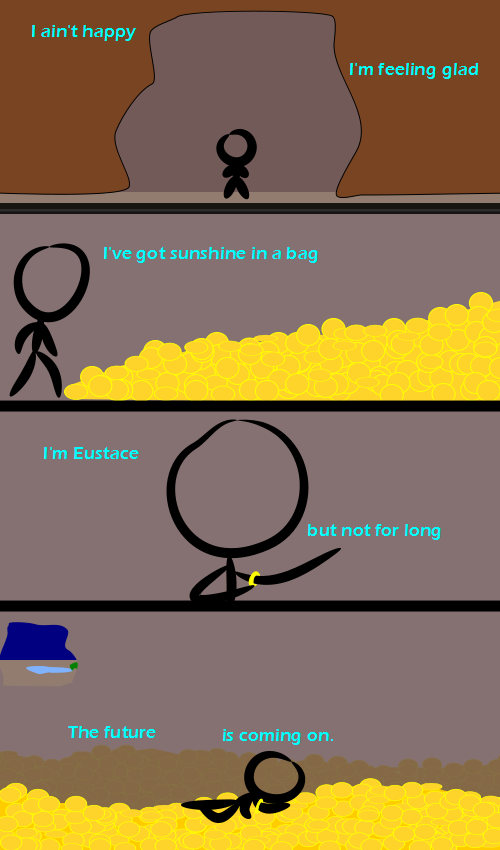

Comic JK 851
When I Feel Like It
⇤
<
?
>
⇥

⇤
<
?
>
⇥
Forum
.
RSS
.
Digg
.
Facebook
.
Reddit
.
Twitter
.
Stumbleupon
Enter your thoughts on number 851 here. Please, no spamming, trolling, phreaking, or being let out of your cave. If only, if only.... I'd keep away from that pool if I were you, Eustace. And lions. >If he's Eustace, we don't want him here. There are so many things in this that I just don't understand. Nonsense lyrics that don't seem to relate at all to the pictures of a person entering a cave, encountering a large pile of rather large yellow disks, putting a ring on his arm, lounging on said disks, and a comment about "renewable" energy. > The lyrics are a parody of the Gorillaz song "Clint Eastwood". "I've got sunshine in a bag" is how one of Clint Eastwood's characters referred to his bag of gold. The yellow disks and ring are clearly gold treasure in the cave. >>Furthermore, the pictures are a reference to a scene from The Voyage of the Dawn Treader, part of the Chronicles of Narnia. Goodness, has no one read their Narnia? >>I'd say it was more of an arm band >>> Sorry, no. I went from "I Can Read" to more adult-level stuff. Pretty much skipped the children's lit. The closest I've come to hearing that song would be seeing a "Gorillaz" picture back near the inception of the group. Maybe I'll go look on YT. Did, enough of that. >>>>Well, sucks to be you! >> "I'm Eustace but not for long" is a pun on the song lyrics, and refers to how Eustace <SPOILERS> is turned into a dragon by sleeping on the dragon-gold </SPOILERS> >>Correction: Eustace is turned into a dragon because of the bracelet he puts on. >>>Could the renewable energy comment be about how having "sunshine in a bag" would help solar energy immensely by solving the "it's not sunny 24 hours a day" argument without batteries >> WRONG! It's a reference to Eustace, from Courage the Cowardly dog, who ended one episode inside a box full of riches that was bigger on the inside. >YES literally just re-read Narnia book 5, well done! >>>And "I'm feeling glad" is obviously a portal reference. not sure how that fits in there. >>>>With interdimensional technology, Aperature Laboratories is bound to have a presence in Narnia. That cooling tower weighs almost as much as your mother. >There is no cooling tower, so that must mean that it is nonexistent, right? >> First panel. Dude in front of cooling tower. See it. Now, I'm under esnare. Seriously, what the hell is this shit?